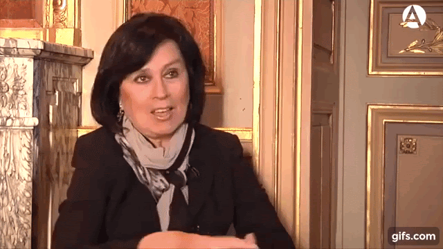

Filoginia - Antología escolar de escritoras hispánicas contemporáneas
Laura Restrepo
Retrato de Laura Restrepo
María Balbuena. Retrato de Laura Restrepo(CC BY-SA)
María Balbuena. Retrato gráfico de Laura Restrepo(CC BY-SA)
Laura Restrepo tiene 70 años, nació el 1 de enero de 1950 en Bogotá.
Laura es morena y su rostro es redondo. Sus ojos son oscuros como su pelo. Laura tiene una estatura media y su configuración del cuerpo es normal.
Vive habitualmente en México con su pareja, que es de ese país, pero también tiene casa en Bogotá. Laura tiene un hijo que se llama Pedro Saboulard.
Se graduó en Filosofía y Letras en la Universidad de los Andes y posteriormente hizo un postgrado en Ciencias Políticas. Fue profesora de Literatura en la Universidad Nacional y del Rosario.
Se dedicó a la política y al periodismo.
Su estilo desdibuja los límites entre identidades tradicionales y en sus obras incorpora una mezcla de periodismo y de experiencias propias.
Además de sus novelas, ha escrito ensayos y un libro infantil.
Como afición Laura colaboró en la revista Cromos.
En la actualidad, su pasión es viajar con el equipo de Médicos sin Fronteras a lugares remotos del mundo para visitar poblaciones afectadas por conflictos bélicos.
Uno de sus viajes la llevó a Tumaco Nariño, donde conoció las historias de mujeres víctimas de violencia sexual por parte de integrantes de grupos armados ilegales.
Mi opinión sobre Laura es que ha conseguido tener una buena vida, porque se ha dedicado a escribir y a ayudar a diferentes personas.
María Balbuena. La multitud errante, de Laura Restrepo(CC BY-SA)
Introducción
Laura Restrepo es una escritora y periodista nacida en Bogotá hace 70 años. Se dedicó a la política y al periodismo. Vivió en la guerrilla colombiana y formó parte de la comisión negociadora de paz entre el gobierno y la guerrilla. Fruto de esta experiencia y de un reportaje que escribió fue amenazada de muerte. Vivió entre México y Madrid intentando la paz en su país. El libro nos narra una historia de amor dentro de un ambiente de guerra.
Siete por Tres vivía un infierno y siempre encaminado a buscar a Matilde Lina. Él había sido abandonado de pequeño y esta mujer los recogió. Vivió con ella gran parte de su infancia pero cuando empezó la revuelta en Colombia los soldados se la llevaron y se volvió a quedar solo. El se sentía culpable de todo lo sucedido y quería buscarla y encontrarla a toda costa. Le contó su historia a una chica voluntaria del albergue donde había llegado y ella hace de narradora de la historia.
Lectura
Me pregunto cómo habrá resistido semejante golpe el adolescente de doce o trece años que debía ser por aquel entonces Siete por Tres.
En qué silencios habrá caído, qué tan hondo habrá descendido en las aguas de su propio ser, qué desconciertos tuvo que atravesar hasta el día en que haciendo acopio de todas sus fuerzas volvió a salir a flote, transformado en este hombre a quien amo sin esperanzas de retribución.
—Su peor tormento ha sido siempre la culpa —me dice Perpetua, y respalda su argumento con la autoridad que le confiere el conocerlo desde antes de la tragedia.
—¿La culpa?
—Culpa de no haber impedido que se la llevaran. De no buscarla con suficiente empeño. De seguir vivo, de respirar, de comer, de caminar: cree que todo es traicionarla. Como le pasan los años sin dar con ella, se ha ido enredando en una telaraña de recriminaciones que lo persiguen despierto y lo revuelcan en sueños.
Cómo puede ser, si en el albergue tanto pregona Siete por Tres la buena maña de perdonar. «Las faltas del pasado se dejan en la puerta. El que aquí se refugie debe saber que de ahora en adelante sólo tiene cuentas pendientes con su conciencia y con Dios».
Así les advierte a todos, hasta a los que vienen acompañados de escandalosa reputación, sea de ladrón, de puta, de guerrero o de asesino. A quien murmura suciedades sobre el pasado ajeno se lo dice de frente: «Mejor cállese, don Fulano, que aquí adentro no hay ni buenos ni malos».
—Esa es la enredadera que toda razón enreda —me responde la anciana—. Al único que Siete por Tres no puede perdonar es a su propia persona.
—¿Por qué anda purgando un crimen que ni cometió ni pudo impedir? —insisto yo—. ¿Por qué se castiga de esa manera?
—Porque son otros los vericuetos de su culpa. Siete por Tres no miraba a Matilde Lina como a una madre —me revela lo que sé mejor que nadie—. Yo, que parí siete y perdí tres, conozco la forma de mirar de un hijo. Matilde (Enrique) Lina sufría extravagancias de temperamento, pero era mujer de empaque fuerte, cara aniñada y pechos grandes. Muchos codiciaban su cuerpo, y si no lograron hacerlo suyo, fue porque ella sabía defenderse a patadas y a mordiscos. La vi lavando en el río con la blusa zafada y a medio abotonar, y vi al Siete por Tres a su lado, muchacho de apenas bozo y pelusa que le iba naciendo allí donde no se atrevía a confesar. Los senos de ella que se asoman y el niño que los contempla, quieto como si fuera de piedra, sofocando el resuello: haciéndose hombre en esa visión.
También yo puedo ver a Matilde Lina al filo del agua, ocupada en su oficio, sumergida en sí misma e inconsciente de su desnudez, en ese momento de intimidad profunda que nada logra perturbar, ni siquiera la fiebre de amores que quema las pupilas del muchacho.
—No habrá sido el primer adolescente que le vea los pechos a la madre —le objeto a Perpetua, y ella se ríe.
—No, no habrá sido —me contesta—. Ni será el primero que de ahí en más ande buscándolos en todos los otros pares que se le crucen por delante.
Conclusión
En el texto se ve claramente que el país pasa por un momento de muchas revueltas en el que la sociedad está asustada y donde muchos han presenciado injusticia. El personaje principal representa a una persona en búsqueda de ayuda: en aquel momento había muchas asociaciones que prestaron ayuda y él llegó a formar parte de la que lo acogió.
La línea de la historia: los conflictos, los momentos de tensión dramática, un hecho trágico, etc., suponen una denuncia de las causas que los han provocado. En gran parte del libro la autora nos cuenta la situación de la sociedad, las distintas guerrillas, revueltas como cuando se llevaron a Matilde Lina y cómo las que huían eran acogidas por los albergues.